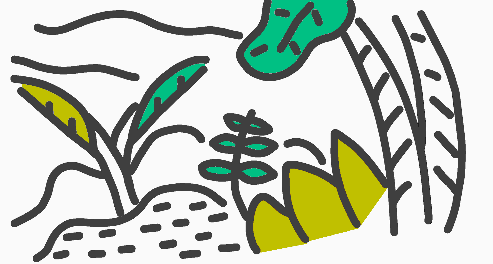

<!DOCTYPE html>

<html>

<head>
  <meta charset="utf-8">
  <title></title>
  <link rel="stylesheet" href="style.css">
  <link rel="preconnect" href="https://fonts.gstatic.com">
  <link href="https://fonts.googleapis.com/css2?family=Pacifico&family=Satisfy&family=Stoke&family=Yellowtail&family=Geo&family=Oswald&family=Lobster&family=Cookie&family=Chewy&family=Limelight&family=Sacramento&family=Plaster&display=swap" rel="stylesheet">
</head>

<body bgcolor="#e6ffea"></body>
<body  background="背景透過のきゅうり.png">
<div style="width: 100px;">
</div>
<bgsound src="tete-n.wav" loop"infinite">
<body text="#2b2b2b">
<body link="#4d5aaf">
<body alink="#ec6d71">
<body vlink="#7058a3">

<header>
<br>
<h3 align=center><font color="#a22041">\爆誕！爆速！爆発！/</font></h3>
<h1 align=center><font color="#006e54"><strong><b>きゅうりやさいのほーむぺーじ。</b></strong></font></h1>
 <h3 align=center>
  <a href="http://www.youtube.com/@kyuuri_yasai">youTube見てね</a>
</3>
<br>
<br>
</header>

<frameste cols="30%,70%">

<hr size=2% noshade color="#004d00">
<h2 align=center><font color="#004d00">きゅうりやさい</font>とは！</h2>
<h3 align=center>見た目は<font color="#004d00">きゅうり</font>、中身も<font color="#004d00">きゅうり</font>、その名も<font color="#004d00">きゅうり。</font></h3>
<h3 align=center><font color="#004d00">きゅうり</font>の主食は<font color="#b37700">バナナ</font>です(?)</h3>
<h3 align=center>チャンネル登録者１万人を超える事を目標にしています！</h3>
<h3 align=center>ちなみにVery YouTuber(Vtuber)</h3>
<h3 align=center>↑_taiyaki_さんのパクリ</h3>
<h3 align=center>将来の夢は、コンセントでパスタを食べることと、玉ねぎの皮でばれんを作ることです。</h3>
<h3 align=center>主にロブロックスとなんか作ってます。</h3>
<h2 align=center>見てね（圧）</h2>
<hr size=2%>
<h2 align=center>色々紹介！</h2>
<h3 align=center>
<a href="index.50.html">HTML+style.cssバージョンのホームページ</a>
</h3>
<h3 align=center>
<a href="index.20.html">URL紹介</a>
</h3>
<h3 align=center>
<a href="index.30.html">キャラクター紹介(?)</a>
</h3>
<h3 align=center>
<a href="index.60.html">背景素材！</a>
</h3>
<h3 align=center>
<a href="index.40.html">English version homepage!</a>
</h3>
<hr size=2%>
<body>
<div style="text-align: center;"></div>
<body>
<h4 align=center><font size="2">↑ジャングル（？）</font></h4>
<hr size=2%>
<h4 align=center><font size="3">新発見（？）windowsでこのサイトを見ると少しバグります</font></h4>
<button type="button" onclick="history.back()">戻る</button>
<button 
  type="button"
  onclick="alert('よく見つけれたね、ここにあるボタン。でも特に意味はないよ！なんかごめん☆')">
</button>
</html>
